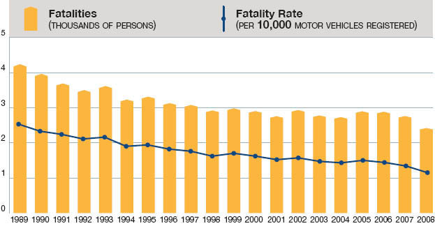

Canadian Automobile Deaths and Injuries Statistics - UN
Analysis
- The X-Axis are years 2000 to 2013
- The Y-Axis is amount of People who have died or been fatally injured
- The amount of deaths and fatalities have been decreasing, due to people following the methods for being safer drivers
- In addition, automobile technology has gotten better in order to make sure the driver and passengers are safer
- This United Nations Sustainability Development Goal is meant to be accomplished by 2020 and is quite likely to accomplish its goal
Canadian Motor Vehicle Traffic Collision Statistics - ServiceOntario

Analysis
- The X-Axis are years 1989 to 2008
- The Y-Axis is amount of People who have died in Ontario
- The amount of deaths and fatalities have been decreasing and is proportional to the the fatality rate of those who have died in vehicle accidents
- This data from ServiceOntario indicates that Canadians will accomplish UN SDG Indicator 3.6.1 in time